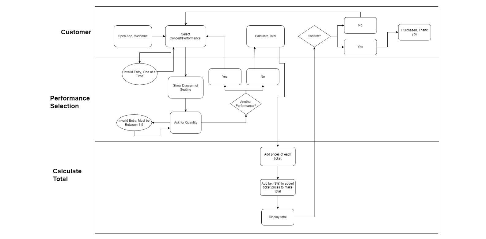

Van Buren
Overview
In the class CIS 345: Business Information Systems Development II, I learned the coding language Python and how to build a simple GUI using the language. One of our projects was to choose a company and create a GUI system to improve or create a more streamlined process for the customer.
I chose the Van Buren, a small concert venue in Phoenix, Arizona, and created a GUI that allows people to buy tickets directly from the Van Buren website instead of using a third-party ticket buying process (like it does now). The GUI will allow the user to choose what concert or performance they want to purchase tickets for and use their input, such as seat location and quantity to calculate a total.
Tools
Based on the overview, I concluded on using the tools:
- Python
- PyCharm
- Draw.io/Diagrams.net
- Slack
My Role
As an individual project, my role contained the following:
- Conducting research on my target company (The Van Buren)
- Creating diagrams and planning
- Building the GUI
- Presenting the final project to the class
Stakeholders
Creating the GUI system for the Van Buren will have a number of stakeholders. These include:
- Concert ticket buyers - Acting
- Other performance ticket buyers - Acting
- Music singers/artists - Non-Acting
- Van Buren's floor staff - Non-Acting
- Van Buren's business owners - Non-Acting
Domain Goals
There are several stakeholder's domain goals for this system. These include:
- Ticket buying for the Van Buren is more secure
- Low fees compared to other ticket buying companies
- Easy ticket buying leads to stress free enjoyable experience
- Without third party more money can go to the venue/artist
- Share music experience with community
Business goals
Business goals for the Van Buren are important to consider in a system that is made for this venue specifically. These include:
- Reduce outsourcing costs by getting rid of third party ticket seller
- Increase profits with direct sales from ticket venue to consumer
- Protect revenue with secure transactions (ticket buyer buys from website instead of third party scammer website)
- Increase future profits with more music artists wanting to perform at Van Buren because of history of good ticket sales
Requirements Diagram
Demonstrated in the following diagram, I was able to use the prior knowledge of stakeholders, domain goals, and business goals to create a more direct way to implement this information in the GUI system's features. This diagram for the Python GUI for the Van Buren was created on Diagrams.net for clear reliability and consistency.
BPMN Diagram
Business Process Modeling Notation (BPMN) is a type of diagram that models the steps of a business from end to end. The BPMN for the Python GUI for the Van Buren was created on Diagrams.net for clear reliability and consistency.
Sequence Diagram
A sequence diagram is a static structure that illustrates the sequence of messages between objects in an interaction. The Sequence Diagram for the Python GUI for the Van Buren was created on Diagrams.net for clear reabaility and consisteny.
Please note: This diagram has been cut to conserve space and maintain readability. The diagram can be read from top to bottom of each picture going left to right.
Class Diagram
A class diagram is used to clearly map out the structure of the system by modeling its classes, their attributes, operations, and relationships among objects. Each box represents a class, and the items below are the members, with # indicates protected and - indicates private. Next to each member is its data type, and below are the methods of each class. The Class Diagram for the Python GUI for the Van Buren was created on Diagrams.net for clear reliability and consistency.
Results
See below for the final result of this project. Including: My video presentation explaining the system, and screenshots of the GUI.

Next Steps
While this project has concluded, next steps I would have taken if allotted extra time is building the system further and improving the design. Though I'm impressed that I built two pages within the very short time frame, a less limited system and better visual design could've given the Van Buren a more accurate prototype for their ticket purchasing system.
In terms of building the system further, the first and foremost thing I would do to tackle this step is add more performances. Due to the short completion time project (roughly one week planning, one week building), I only had the time to include four upcoming performances, which is a very small sample size for this venue. If I was able to add the rest of the performances planned for that year, and maybe even create a way to continuously update with each performance announced, the GUI would be much more functional if used right away.
Moreover, improving the design could automatically improve the professional feel of the system. Most of these improvements could be done on the first page, and are subtle things such as adjusting the spacing to match more with the second page, and changing the colors of the buttons. Additionally, if more information was added on each performance, such as a summary of the artist or bigger photos covering their tour dates, the layout would feel much less empty. Lastly, the Van Buren photo at the top should be much bigger and extended horizontally in order to create a hero image, which feels much more modern and taking advantage of the space than the current layout.
Learnings
In conclusion, this project taught me about building a GUI with Python, and Unified Modeling Language (UML) planning. Though I had been using Python in this class previously, this was the first time I had used to create something of this magnitude. This project also taught me the importance of planning ahead, and simply how helpful UML diagrams can be when creating a system to this extent. The GUI Project and presentation containing everything outlined above earned a score of 100%, further displaying my application of these concepts and practices.